Hanyang Pokémon Training - Level I Part 1 (selected slides)
Selected slides exported as still images from Ronald's PowerPoint for his English classes at Hanyang University Elementary School. The presentation plays its animation, motion paths, video, and audio only in PowerPoint, so stills cannot show them. The full presentation is kept in Ronald's private archive and is available to faculty on request.
The character art and game images belong to their owners and were used for classroom teaching.
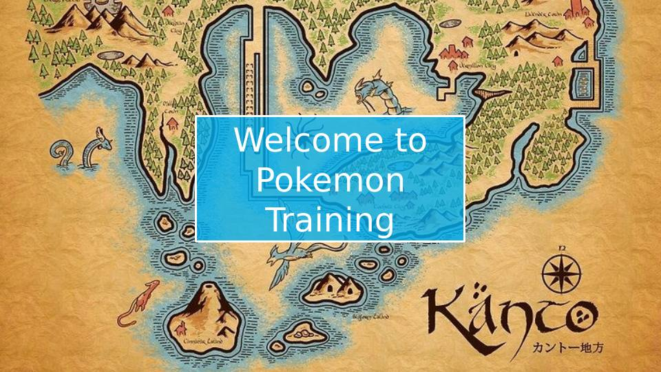
Slide 1. Title slide: Welcome to Pokémon Training, over a map of the Kanto region.
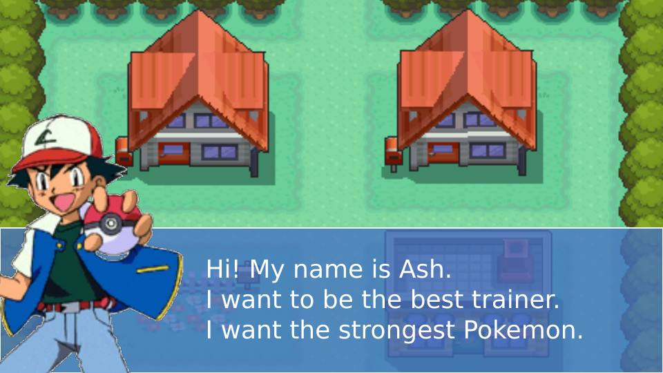
Slide 4. Ash introduces himself in a speech box over a town scene.
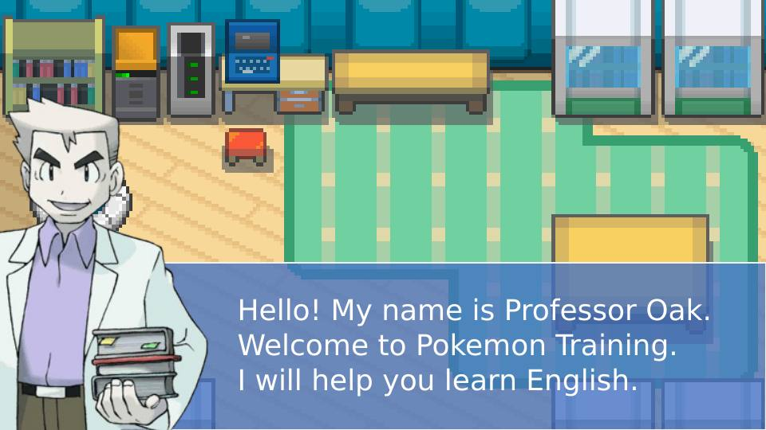
Slide 6. Professor Oak welcomes students to Pokémon Training and says he will help them learn English.
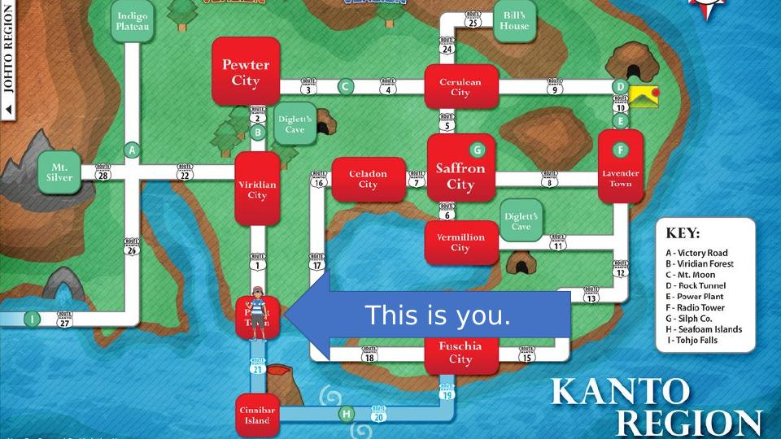
Slide 8. A region map with an arrow and the label: This is you.
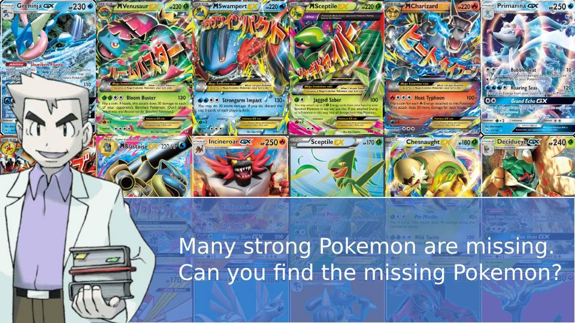
Slide 9. Professor Oak asks students to find the missing Pokémon.
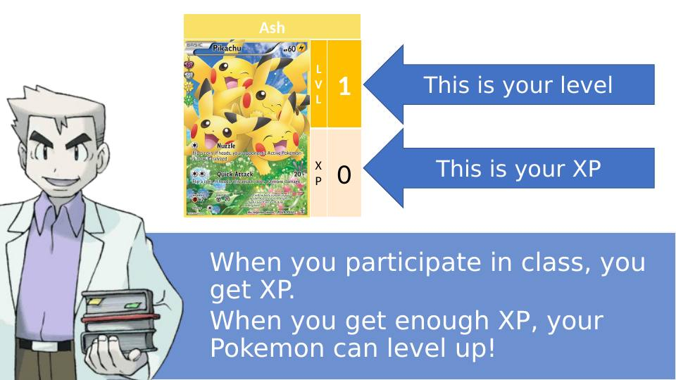
Slide 11. Level and XP explained: students earn XP by participating in class and their Pokémon level up.
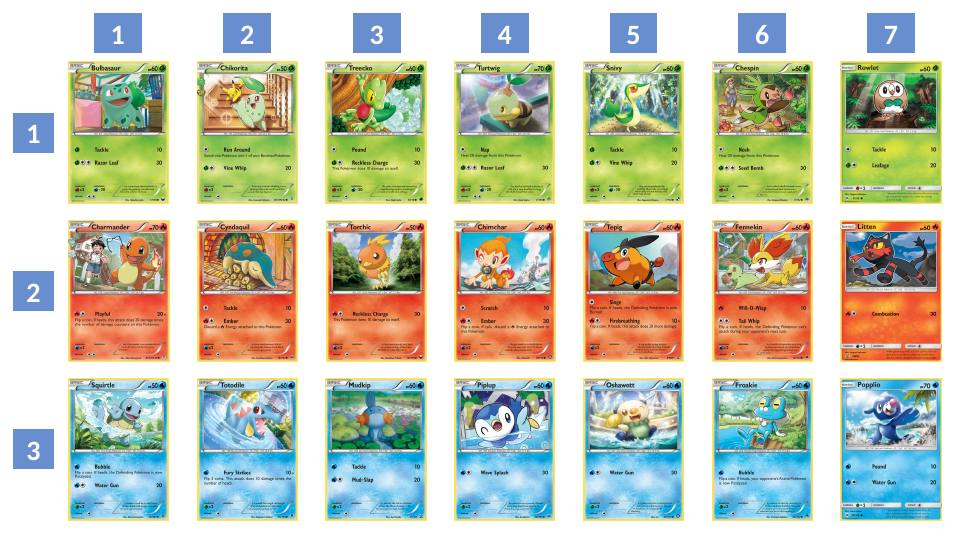
Slide 12. A numbered grid of Pokémon cards that students choose from.
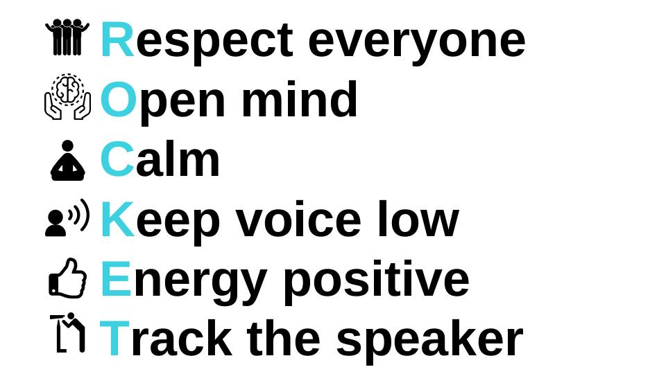
Slide 14. Class rules in an acrostic: Respect everyone, Open mind, Calm, Keep voice low, Energy positive, Track the speaker.
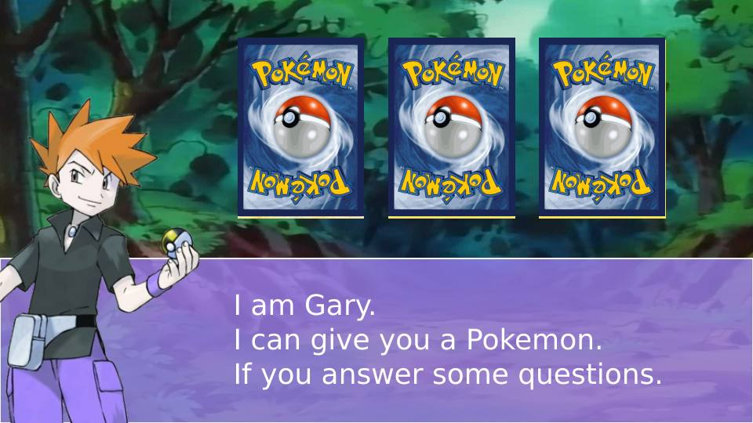
Slide 26. Gary offers a Pokémon card to students who answer his questions.
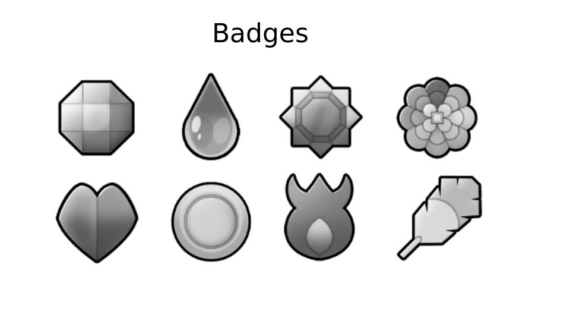
Slide 27. The set of eight gym badges students can earn.
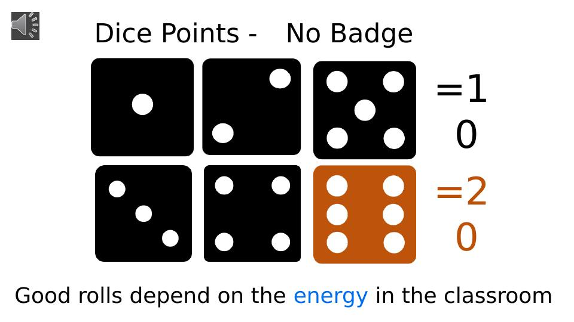
Slide 28. Dice points: how dice rolls convert to points, tied to the energy in the classroom.